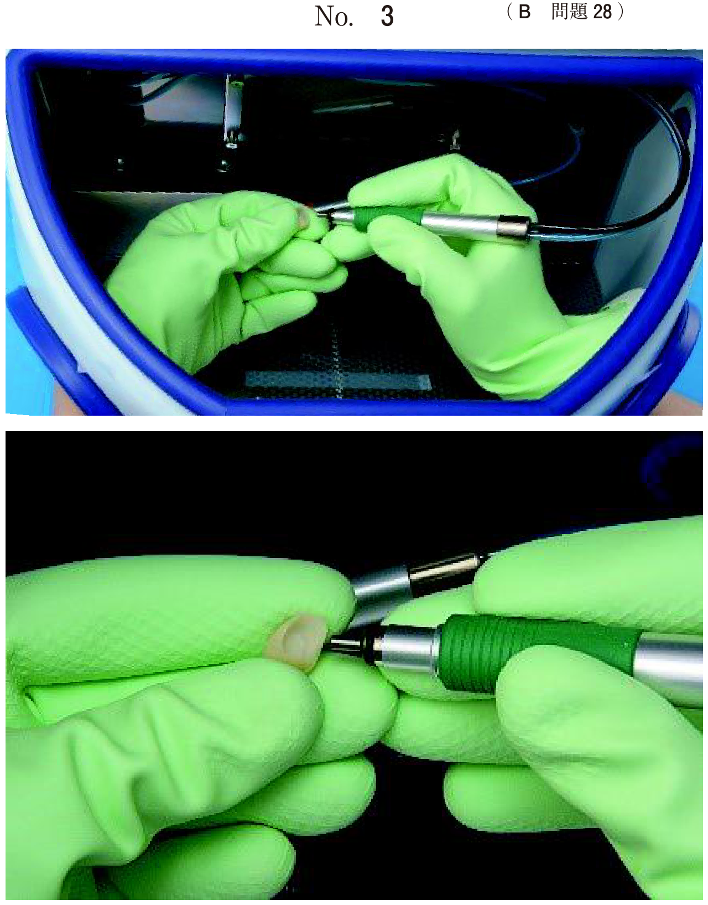
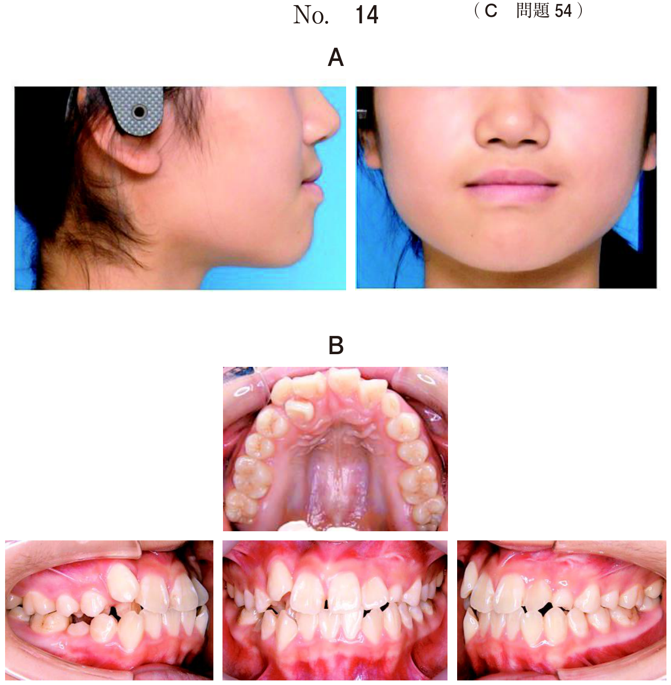
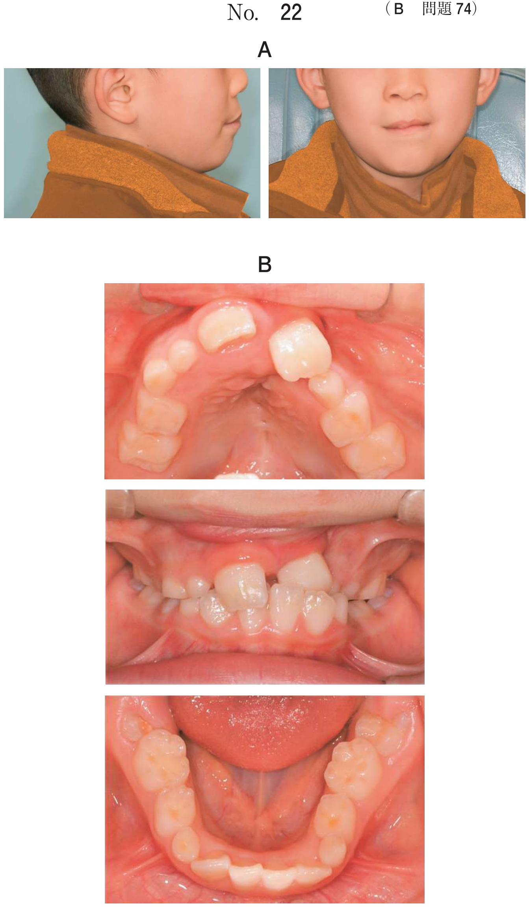

口腔領域の神経疾患
1. 顔面神経麻痺
顔面神経の走行と分岐
顔面神経は側頭骨内を走行し、膝神経節を経て以下の順に分枝する。障害部位が中枢側ほど多くの症状が出現する。
| 分枝（中枢側から順） | 機能 | 障害時の症状 |
|---|---|---|
| 大錐体神経 | 涙腺分泌 | 涙液分泌障害（口渇ではなくドライアイ） |
| アブミ骨筋神経 | アブミ骨筋の収縮 | 聴覚過敏 |
| 鼓索神経 | 舌前方2/3味覚＋顎下腺・舌下腺分泌 | 味覚障害＋唾液分泌障害 |
| 末梢運動枝 | 顔面表情筋の運動 | 表情筋麻痺のみ |
- 膝神経節の障害：涙液↓＋味覚↓＋聴覚過敏＋唾液↓＋表情筋麻痺（全症状）
- アブミ骨筋神経〜鼓索神経の間：味覚↓＋聴覚過敏＋唾液↓＋表情筋麻痺
- 鼓索神経〜末梢の間：味覚↓＋唾液↓＋表情筋麻痺
- 鼓索神経より末梢：表情筋麻痺のみ
Bell麻痺 vs Ramsay Hunt症候群
| Bell麻痺 | Ramsay Hunt症候群 | |
|---|---|---|
| 原因 | 原因不明（HSV-1再活性化説） | VZVの膝神経節再活性化 |
| 外耳道水疱 | なし | あり（帯状疱疹） |
| 第VIII脳神経症状 | なし | あり（難聴・耳鳴り・めまい） |
| 味覚障害 | あり（鼓索神経障害） | あり |
| 唾液分泌障害 | あり | あり |
| 予後 | 比較的良好（完全治癒率約50%） | 不良（後遺症30%） |
| 治療 | ステロイド＋VB12＋抗ウイルス薬 | 抗ウイルス薬（アシクロビル）＋ステロイド |
Bell現象：閉眼時に眼球が反射性に上転する現象。末梢性顔面神経麻痺で閉眼不能のため観察される。
中枢性 vs 末梢性の鑑別
| 中枢性 | 末梢性（Bell麻痺等） | |
|---|---|---|
| 前額部のしわ寄せ | 可能（両側支配のため） | 不能 |
| 麻痺の範囲 | 顔面下半分のみ | 顔面全体（額を含む） |
| 原因 | 脳出血・脳梗塞など | Bell麻痺・Hunt症候群など |
42歳の男性。顔の違和感を主訴として来院した。今朝洗顔時に気付いたという。既往歴に特記事項はない。初診時の眉挙上時と口唇突出時の顔貌写真（別冊No.19A、B）を別に示す。
適切な治療法はどれか。2つ選べ。


b NSAIDsの投与
c ビタミンB12の投与
d カルバマゼピンの投与
e 副腎皮質ステロイド薬の投与
【解説】朝の洗顔時に気付いた顔面の違和感＋既往歴なし→Bell麻痺。治療はステロイド（神経浮腫の軽減）＋ビタミンB12（神経修復促進）。カルバマゼピンは三叉神経痛の治療薬。NSAIDsは対症療法にすぎない。
Bell麻痺の症状はどれか。2つ選べ。
b めまい
c 味覚異常
d 外耳道の水疱
e 唾液分泌障害
【解説】Bell麻痺は膝神経節付近の障害で鼓索神経が侵されるため、味覚異常＋唾液分泌障害を伴う。外耳道の水疱はHunt症候群の所見。耳鳴り・めまいは第VIII脳神経症状でHunt症候群に随伴する。
Hunt症候群でみられる症状はどれか。2つ選べ。
b 難 聴
c 視力障害
d 鼻唇溝消失
e 上唇知覚鈍麻
【解説】Hunt症候群の三徴は外耳道帯状疱疹＋顔面神経麻痺＋第VIII脳神経症状。難聴（第VIII脳神経）と鼻唇溝消失（顔面神経麻痺）が該当。上唇知覚鈍麻は三叉神経（V2）の症状。
61歳の女性。顔面の非対称を主訴として来院した。数日前から食事時に口角から食物が漏れるようになったという。聴覚検査で高音域の閾値の低下が認められた。初診時の閉眼時の写真（別冊No.7A）、口笛吹き時の写真（別冊No.7B）及び耳介部の写真（別冊No.7C）を別に示す。
この患者が随伴しやすいのはどれか。2つ選べ。



b 味覚異常
c 舌運動障害
d 唾液分泌障害
e 頬部の知覚鈍麻
【解説】顔面非対称＋口角からの食物漏れ＋聴覚障害＋耳介部の所見（水疱）→Ramsay Hunt症候群。膝神経節の障害により鼓索神経が侵され、味覚異常＋唾液分泌障害を随伴する。複視は動眼神経、舌運動障害は舌下神経、頬部知覚は三叉神経の症状。
膝神経節付近での顔面神経損傷により認められるのはどれか。2つ選べ。
b 顔面痛
c 瞳孔散大
d 角膜反射消失
e 舌後部1/3の味覚消失
【解説】膝神経節付近の損傷→大錐体神経の障害→涙腺分泌障害（ドライアイ）→代償的に口渇を感じる。また、角膜反射は三叉神経（求心路）と顔面神経（遠心路＝閉眼）で構成され、顔面神経障害で閉眼不能→角膜反射消失。舌後部1/3は舌咽神経の支配。瞳孔散大は動眼神経。
Bell麻痺で運動が障害されるのはどれか。1つ選べ。
b 下直筋
c 口輪筋
d 声帯筋
e 顎舌骨筋
【解説】Bell麻痺は顔面神経麻痺であり、顔面表情筋が障害される。口輪筋は表情筋。咬筋は三叉神経V3、下直筋は動眼神経、声帯筋は迷走神経（反回神経）、顎舌骨筋は三叉神経V3の支配。
2. 片側顔面痙攣・三叉神経痛
- 三叉神経痛：上小脳動脈（SCA）が三叉神経根を圧迫→電撃様疼痛
- 片側顔面痙攣：後下小脳動脈（PICA）等が顔面神経を圧迫→不随意な顔面筋収縮
- 根治的手術はいずれも微小血管減圧術（Jannetta手術）
三叉神経痛：真性 vs 仮性
| 真性（特発性） | 仮性（症候性） | |
|---|---|---|
| 原因 | 血管圧迫 | 腫瘍・多発性硬化症・帯状疱疹後など |
| 痛みの性質 | 電撃痛（一瞬の激痛を反復） | 持続痛・鈍痛が多い |
| トリガーゾーン | あり（洗顔・歯磨き・食事で誘発） | ないことが多い |
| 不応期 | あり | なし |
| 薬物治療 | カルバマゼピンが著効 | 効果が乏しいことがある |
片側顔面痙攣
- 初発部位：眼輪筋（目の周りのピクつき）→頬→口角→広頸筋へ拡大
- 女性に多い。夜間にも持続
- 治療：ボツリヌス毒素注射（対症療法）、微小血管減圧術（根治的）
頭蓋内での血管による組織圧迫が原因となるのはどれか。2つ選べ。
b 三叉神経痛
c Parkinson病
d 片側顔面痙攣
e Ramsay Hunt症候群
【解説】三叉神経痛と片側顔面痙攣はともに頭蓋内血管による神経圧迫が原因。Parkinson病は中脳黒質のドパミン神経変性。Hunt症候群はVZV感染。舌痛症は心因性要素が強い。
顔面痙攣が初発する筋はどれか。1つ選べ。
b 眼輪筋
c 口輪筋
d オトガイ筋
e 口角下制筋
【解説】片側顔面痙攣は眼輪筋のblepharospasmから始まり、下方へ拡大する。
3. 各脳神経の麻痺と症状
主要な脳神経麻痺の症状
| 神経 | 主な支配 | 麻痺時の症状 |
|---|---|---|
| 三叉神経（V） | 顔面の知覚、咀嚼筋 | 顔面の知覚鈍麻、咬合力低下 |
| 顔面神経（VII） | 表情筋、味覚（前2/3）、唾液腺 | 口唇閉鎖不全、鼻唇溝消失、閉眼不能 |
| 舌咽神経（IX） | 咽頭筋（茎突咽頭筋）、味覚（後1/3） | 開鼻声、口蓋垂の偏位 |
| 迷走神経（X） | 咽頭筋・喉頭筋、内臓 | 嗄声（反回神経麻痺）、口蓋垂の偏位 |
| 副神経（XI） | 僧帽筋、胸鎖乳突筋 | 肩の挙上障害 |
| 舌下神経（XII） | 舌筋の運動 | 挺舌時に患側へ偏位 |
- 「アー」発音時に口蓋垂が健側に引かれる→患側の舌咽神経・迷走神経の麻痺
- 舌咽神経と迷走神経は咽頭神経叢を形成し、軟口蓋の運動を支配
神経麻痺と症状との組合せで正しいのはどれか。2つ選べ。
b 舌神経麻痺———挺舌時の偏位
c 顔面神経麻痺———口唇閉鎖不全
d 迷走神経麻痺———嗄 声
e 舌下神経麻痺———鼻唇溝消失
【解説】顔面神経は表情筋（口輪筋）を支配→麻痺で口唇閉鎖不全。迷走神経の反回神経が声帯を支配→麻痺で嗄声。閉眼不能は顔面神経麻痺（動眼神経ではない）。挺舌時偏位は舌下神経（舌神経ではない）。鼻唇溝消失は顔面神経（舌下神経ではない）。
舌咽神経麻痺の症状はどれか。1つ選べ。
b 開鼻声
c 口腔ジスキネジア
d 舌前方2/3の味覚障害
e 舌突出時の舌尖の偏位
【解説】舌咽神経は咽頭神経叢に参加し軟口蓋の運動に関与。麻痺すると軟口蓋挙上不全→鼻咽腔閉鎖不全→開鼻声。嗄声は迷走神経（反回神経）。舌前方2/3の味覚は顔面神経（鼓索神経）。舌尖の偏位は舌下神経。
80歳の男性。脳梗塞で片側が麻痺している。「アー」と発音させたところ、口蓋垂が健側に引かれた。
この検査から判断して麻痺している可能性が高い神経はどれか。2つ選べ。
b 顔面神経
c 舌咽神経
d 迷走神経
e 舌下神経
【解説】「アー」発音時の口蓋垂の偏位→軟口蓋の運動障害→咽頭神経叢を形成する舌咽神経＋迷走神経の麻痺。口蓋垂は健側（正常側）に引かれる。
障害によって嗄声を生じるのはどれか。1つ選べ。
b 顔面神経
c 前庭神経
d 反回神経
e 舌下神経
【解説】反回神経（迷走神経の枝）は声帯を支配する。障害により声帯麻痺→嗄声。
76歳の男性。舌の違和感を主訴として来院した。1か月前から食物の食べにくさを自覚していたという。既往歴に特記すべき事項はない。初診時の口腔内写真（別冊No.22A）と舌前方突出時の写真（別冊No.22B）を別に示す。
最も考えられるのはどれか。1つ選べ。


b 顔面神経麻痺
c 舌咽神経麻痺
d 迷走神経麻痺
e 舌下神経麻痺
【解説】舌の違和感＋食べにくさ＋挺舌時の偏位→舌下神経麻痺。舌下神経は舌筋の運動を支配し、片側麻痺では挺舌時に舌尖が患側に偏位する。舌の片側萎縮を伴うこともある。
合併症と原因の組合せで正しいのはどれか。2つ選べ。
b 過換気症候群 ――― てんかん
c 血管迷走神経反射 ― 感覚神経機能低下
d メトヘモグロビン血症 ― 一酸化炭素中毒
e アナフィラキシーショック ― 薬物アレルギー
【解説】反回神経麻痺→声帯麻痺→嗄声は正しい。薬物アレルギー→アナフィラキシーショックも正しい。過換気症候群は精神的ストレスが原因（てんかんではない）。血管迷走神経反射は迷走神経の過度の興奮が原因。メトヘモグロビン血症はプリロカインの過量投与が原因（一酸化炭素中毒は一酸化炭素ヘモグロビン血症）。
4. 神経損傷後の対応
抜歯やインプラント埋入後の下歯槽神経・オトガイ神経損傷による知覚障害は臨床で遭遇しやすい偶発症である。
- 基本治療：ビタミンB12（メコバラミン）＋ATP＋ステロイド
- 原因が物理的圧迫（インプラント）の場合→インプラント除去が先決
- カルバマゼピンは神経痛（電撃痛）の治療薬であり、知覚麻痺には不適
- 回復しない場合→星状神経節ブロック、理学療法、神経縫合術
40歳の男性。下唇のしびれを主訴として来院した。3日前に他院で下顎右側智歯を抜去し、その後に生じたという。触覚検査と二点識別検査の結果、オトガイ部と下唇の一部は健側と比べて閾値が上昇していた。初診時に閾値の上昇がみられた範囲を印記した顔貌写真（別冊No.34A）と抜歯後のエックス線画像（別冊No.34B）を別に示す。
適切な処置はどれか。1つ選べ。


b 抗菌薬の投与
c 抜歯窩の再掻爬
d ビタミンB12の投与
e カルバマゼピンの投与
【解説】智歯抜歯後のオトガイ部・下唇のしびれ→下歯槽神経損傷。まずビタミンB12で神経修復を促進する。3日後の段階では神経縫合は早計。カルバマゼピンは電撃痛（三叉神経痛）の治療薬であり知覚麻痺には無効。
72歳の男性。右側オトガイ部の知覚麻痺を主訴として来院した。3週前にインプラント埋入手術を受けたという。初診時のエックス線写真（別冊No.5）を別に示す。
まず行うべき対応はどれか。2つ選べ。

b インプラント除去
c カルバマゼピン投与
d ビタミンB12製剤投与
e 副腎皮質ステロイド投与
【解説】インプラント埋入後のオトガイ部知覚麻痺→インプラントが下歯槽神経を圧迫している可能性。まずインプラント除去で圧迫を解除し、ビタミンB12で神経修復を促進する。カルバマゼピンは知覚麻痺には無効。
5. 茎状突起過長症（Eagle症候群）
茎状突起（通常25mm程度）が85mm以上に過長、または茎突舌骨靱帯の石灰化により、嚥下時の咽頭部疼痛や異物感を生じる。
- 食事時に舌根部〜咽頭部の疼痛・違和感
- 開口障害は通常認めない
- 診断：エックス線写真で過長した茎状突起を確認
- 治療：茎状突起の切除
48歳の女性。食事時の左側舌根部から咽頭部にかけての違和感を主訴として来院した。開口障害を認めない。初診時のエックス線写真（別冊No.31）を別に示す。
疑われるのはどれか。1つ選べ。

b 慢性骨髄炎
c 関節突起骨折
d 茎状突起過長症
e 顎下腺体内唾石
【解説】食事時の舌根部〜咽頭部の違和感＋開口障害なし＋エックス線で過長した茎状突起→茎状突起過長症（Eagle症候群）。関節突起骨折では開口障害を伴う。唾石症では食事時の顎下部腫脹が特徴。
6. 鑑別のまとめ
顔面神経麻痺の鑑別
| Bell麻痺 | Hunt症候群 | 中枢性 | |
|---|---|---|---|
| 原因 | HSV-1? | VZV | 脳血管障害 |
| 額のしわ寄せ | 不能 | 不能 | 可能 |
| 外耳道水疱 | なし | あり | なし |
| 難聴・めまい | なし | あり | なし |
| 治療 | ステロイド＋VB12 | 抗ウイルス薬＋ステロイド | 原疾患の治療 |
カルバマゼピン vs ビタミンB12
| 薬剤 | 適応 | 機序 |
|---|---|---|
| カルバマゼピン | 三叉神経痛、舌咽神経痛（電撃痛） | Naチャネル遮断→異常興奮抑制 |
| ビタミンB12 | 神経損傷後の知覚麻痺、Bell麻痺 | 神経修復促進 |